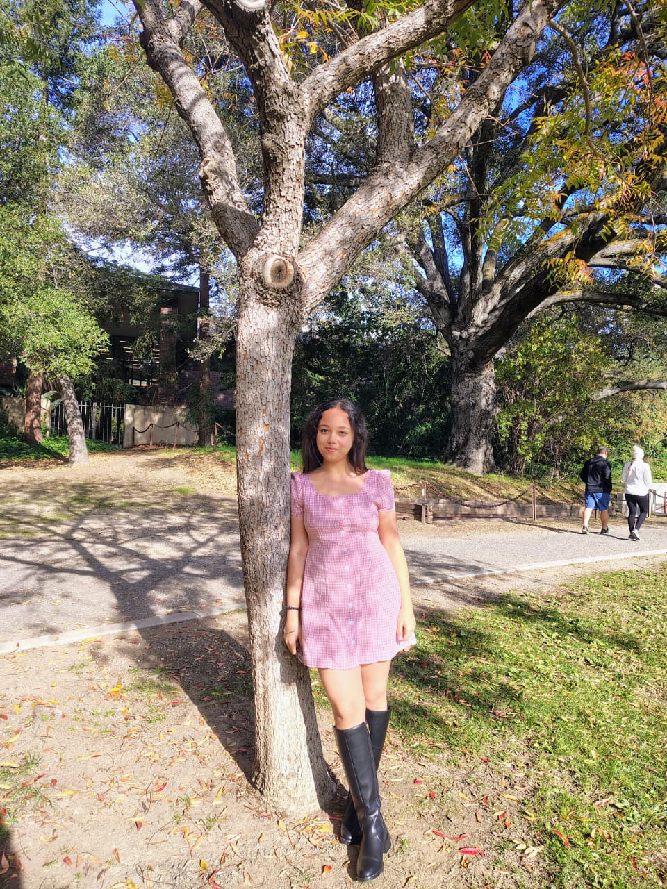

Hello, I'm
Full Stack Developer · Creative Technologist
I craft digital experiences that sit at the intersection of clean engineering and thoughtful design. Passionate about building things that actually matter.

I'm a graduate student in Computer Science at UC Santa Cruz, and honestly most of what I build starts with the same question: how do I make something smart actually feel good to use? I spend my days in the AI Explainability and Accountability Lab building a legal question-answering system, wiring together vector search and knowledge graphs so the answers people get are not just accurate but traceable back to where they came from. On the side I served as a Teaching Assistant for courses like Data Structures, Probalility and Statistics for Engineers, Discrete Mathematics, and AI-and-music, which keeps me honest about explaining hard things simply.
A lot of my work lives where machine learning meets sound. I've built systems that blend the timbre of one track onto another with Mel-spectrogram optimization, restored century-old piano recordings using CNNs and autoencoders, and even a two-way Indian Sign Language translator that made it into a journal. Before grad school I shipped real products too, from big-data pipelines in PySpark to React frontends serving tens of thousands of users. I care as much about the interface as the model underneath it.
When I step away from the screen you'll usually find me drawing or building some exciting web designs, planning my next trip somewhere new, getting lost in music, or exploring some new sports. Those things aren't a break from the work so much as where a lot of the ideas come from. If any of this resonates, I'd love to build something together.
University of California, Santa Cruz
Coursework:
SRM Institute of Science and Technology, Chennai
Coursework:
AI Explainability & Accountability (AIEA) Lab, UCSC · Sep 2025 – Present
University of California, Santa Cruz · Jan 2025 – June 2026
REGex Software Services · Jul 2021 – Sep 2021
InMovidu Tech · May 2020 – Jun 2020
Hybrid retrieval-augmented generation over California legal documents: top-k vector search with Chroma fused with Neo4j knowledge-graph expansion, and a chat interface with source-cited answers.
Optimization-based audio style transfer using direct Mel-spectrogram optimization in TensorFlow, cutting total and style loss by over 90% with no network training.
End-to-end historic-piano restoration with a CNN classifier and convolutional autoencoder denoiser, reaching a 21.21 dB SNR gain and 99.92% classification accuracy.
Two-way ISL to Text/Speech system with EfficientNet-B0 gesture recognition on Android (TF Lite) and an NLP speech-to-sign pipeline. Published in IJCSE, 2023.
See the full collection across AI, audio, full-stack and big data.
View all ↗Competitive programming and mathematical puzzles
I'm open to collaborations and always happy to talk through new ideas or career opportunities. If you're building something interesting, let's connect.
You can also reach out to me on